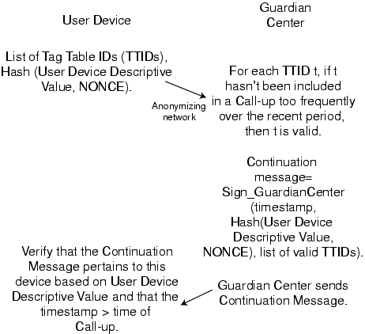

Figure 5: Privacy-preserving Call-ups. User knows that it is talking to the Guardian Center but not vice versa (an option of SSL). TTIDs do not reveal the associated Tags. The one-way hash function associated with the NONCE prevents any revelation of the User Device Descriptive Value, so even processor identifiers can be used without fear of privacy breach.
Back to Article